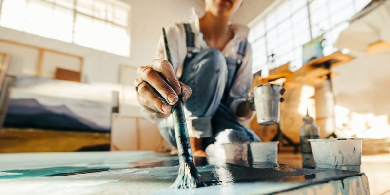

Bienvenidos a mi página
En este sitio quiero compartir con ustedes mi proyecto de vida, mis metas, mis sueños y aquello que me inspira cada día a seguir adelante. Mi mayor motivación es el arte, una forma maravillosa de expresarme y conectar con los demás.

Mi Proyecto de Vida
Mi proyecto de vida está enfocado en estudiar artes plásticas, porque desde pequeña me ha gustado dibujar, pintar y crear cosas con mis manos. El arte es una forma de expresar lo que siento y lo que pienso, y me gustaría que a través de mis obras otras personas puedan sentir emociones o reflexionar sobre lo que las rodea.
Quiero prepararme profesionalmente para mejorar mis técnicas, aprender de grandes artistas y desarrollar mi propio estilo. En el futuro me gustaría trabajar como artista, exponer mis obras y también enseñar a otros a descubrir su talento y su creatividad.
Sé que para lograrlo necesito esforzarme, estudiar con dedicación y nunca rendirme, porque el arte es mi pasión y quiero que sea parte de mi vida para siempre.

Mis Pasatiempos
Bueno, como se podrán imaginar, mi pasatiempo favorito es crear dibujos, pintar, hacer manualidades, crear cajas decorativas y aprender nuevas técnicas para el dibujo y la pintura. Me encanta pasar el tiempo rodeada de colores, pinceles y materiales, dejando volar mi imaginación.

¿Qué son las Artes Plásticas?
Las artes plásticas son una forma maravillosa de expresar sentimientos, ideas y emociones a través de materiales como el dibujo, la pintura, la escultura y muchas otras técnicas. En ellas, el artista puede transformar algo simple en una obra llena de belleza y significado.
Lo más lindo de las artes plásticas es que permiten ver el mundo desde diferentes perspectivas, valorar los detalles y descubrir la creatividad que todos llevamos dentro. Cada creación es única, porque refleja la esencia y la imaginación de quien la hace.